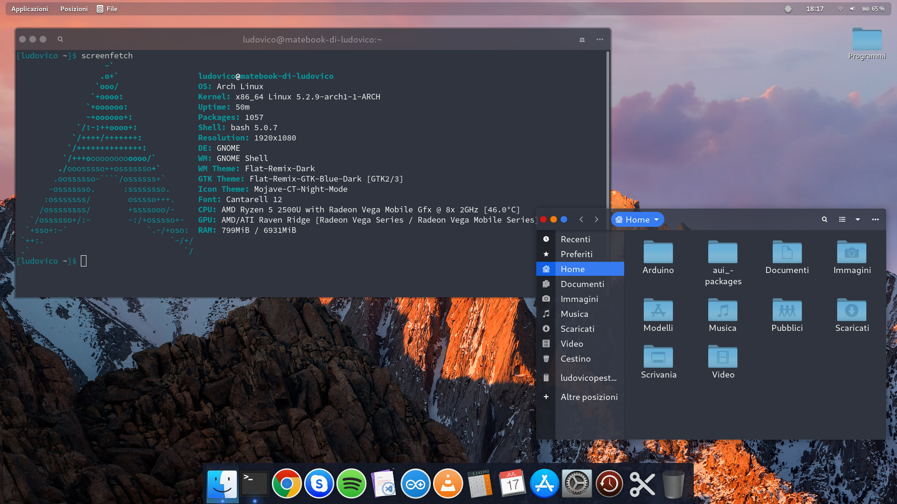
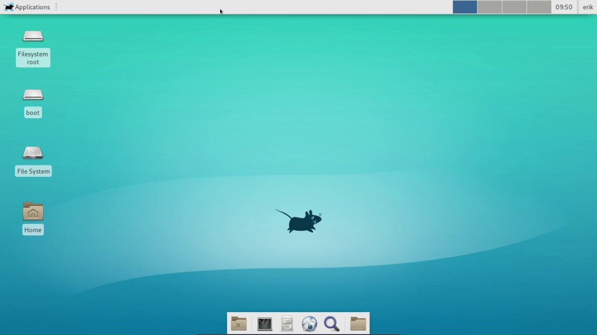
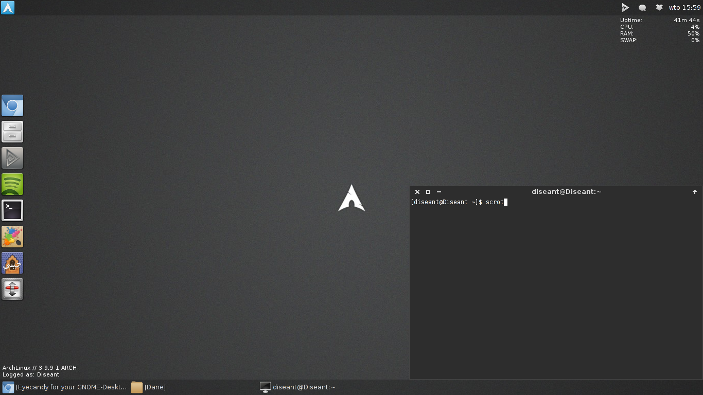
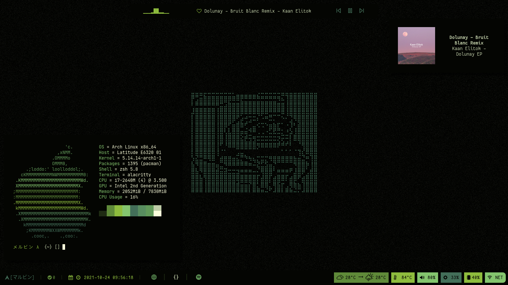
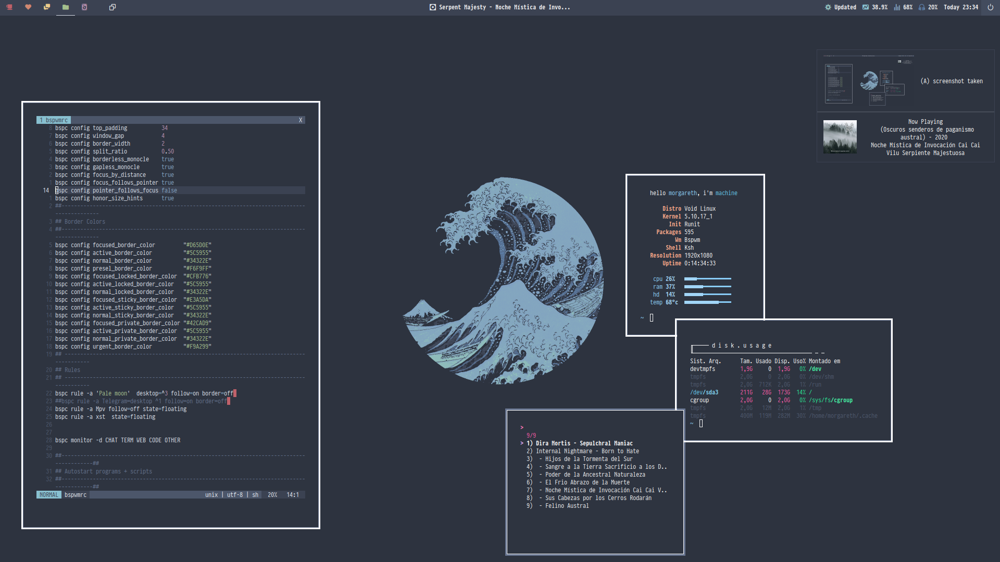
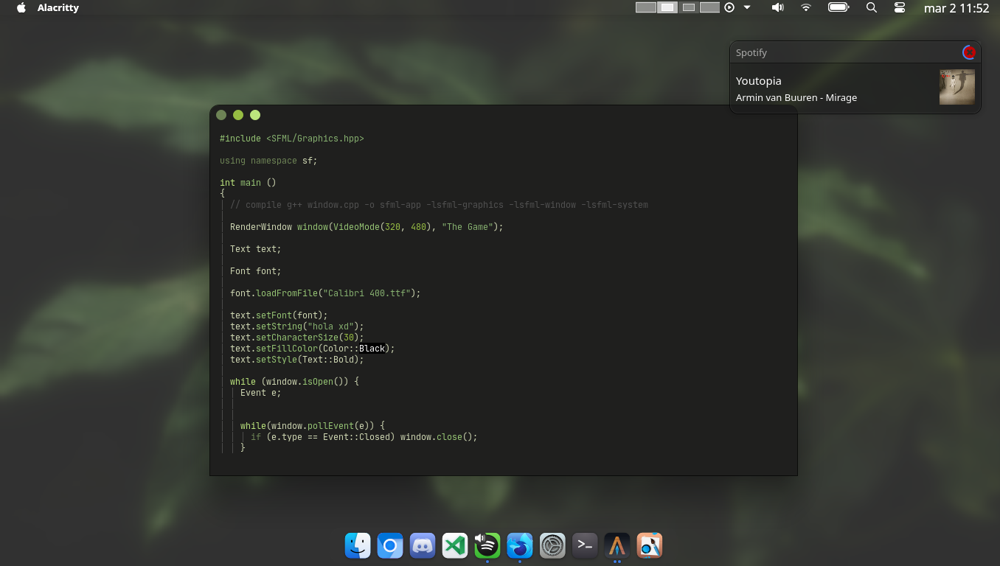

ARCH

A diferencia de las distribuciones populares basadas en el Núcleo
Linux como Ubuntu o Linux Mint, Arch Linux no posee herramientas
de configuración automática, compartiendo la misma filosofía de
distribuciones como Slackware. Para instalar y configurar este
sistema operativo se necesita un grado de conocimiento superior al
básico. No obstante, se puede mantener y administrar el sistema de
forma sencilla. Los creadores y la comunidad, denominan como
"filosofía".
Detalles
- Desarrollador: Levente Polyak
- Ultimo Version: Rolling Release
- Escritorio Predeterminado: A la Eleccion del usuario
- Administrador de Paquetes: Pacman
- Sitio Web Oficial: ArchLinux.org
Escritorios

(Arch Linux Gnome Desktop)

(Arch Linux XFCE Desktop)

(Arch Linux LXDE Desktop)

(Arch Linux i3 Window Tiling Manager)

(Arch Linux Bspwm)

(Arch Linux KDE Plasma Desktop)